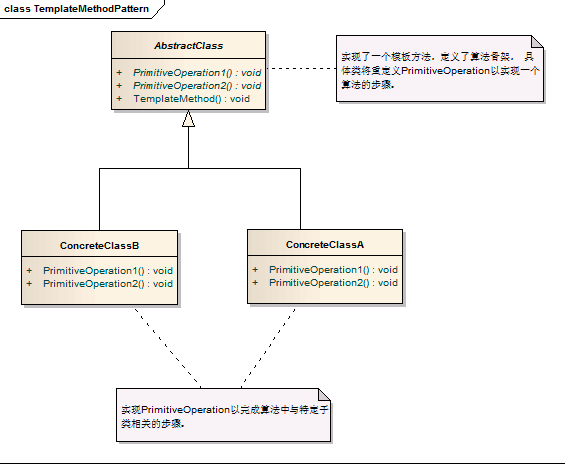

模板方法模式
定义：规定一个操作中的算法的骨架，而将步骤延迟到子类中。模板方法使得子类可以不改变一个算法的结构即可重定义算法的某些特定步骤。
场景
通过模板方法我们可以控制子类扩展，因为子类必须遵守算法规则(从父类继承而来)。在多个子类拥有相同的方法，并且这些方法逻辑相同时，可以考虑使用模版方法模式。在程序的主框架相同，细节不同的场合下，也比较适合使用这种模式。
策略模式的结构：

图中的角色：
抽象类（AbstractClass）：在抽象类中定义了一系列基本操作，这些基本操作可以是具体的，也可以是抽象的，每一个基本操作对应算法的一个步骤，在其子类中可以重定义或实现这些步骤。同时，在抽象类中实现了一个模板方法，用于定义一个算法的框架，模板方法不仅可以调用在抽象类中实现的基本方法，也可以调用在抽象类的子类中实现的基本方法，还可以调用其他对象中的方法。
具体类（ConcreteClass)：它是抽象类的子类，用于实现在父类中声明的抽象基本操作以完成子类特定算法的步骤，也可以覆盖在父类中已经实现的具体基本操作
进一步了解策略模式
关于钩子方法：
由抽象类声明并加以实现，但是子类可以去扩展，子类可以通过扩展钩子方法来影响模版方法的逻辑。最简单的钩子方法就是空方法，另一种钩子方法可以实现对其他方法进行约束，这种钩子方法通常返回一个bool类型，即返回true或false，用来判断是否执行某一个基本方法。同时我们也可以在钩子方法中定义一个默认的实现，如果子类不覆盖钩子方法，则执行父类的默认实现代码。
优点：
- 模板方法模式通过把不变的行为搬移到超类，去除了子类中的重复代码
- 子类实现算法的某些细节，有助于算法的扩展。
- 通过一个父类调用子类实现的操作，通过子类扩展增加新的行为，符合“开放-封闭原则”
代码实例：
|
|